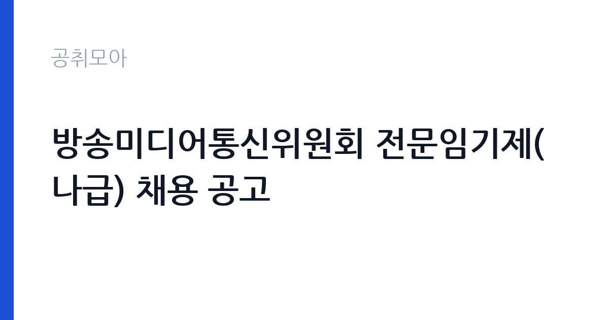

[국가기관] 방송미디어통신위원회 전문임기제(나급) 채용 공고
방송미디어통신위원회 · 경기 · 마감 2026-11-10 (D-11) · 출처 나라일터

한눈에 보는 모집 조건
| 기관 | 방송미디어통신위원회 |
|---|---|
| 공고명 | 방송미디어통신위원회 전문임기제(나급) 채용 공고 |
| 고용형태 | 임기제 |
| 근무지 | 경기 |
| 게시일 | 2026-10-30 |
| 마감일 | 2026-11-10 (D-11) |
지원자격, 이렇게 읽으세요
- 전문임기제 나급 1명
- 접수 ~2026-11-10 마감
- 세부 조건은 원문 공고문 확인
임기제공무원은 공무원 신분이지만 임용 기간이 정해져 있습니다. 전문성이 필요한 업무에 채용되며 임용 기간과 연봉등급이 공고문에 명시됩니다. 임기 중에는 공무원으로서의 복무 규정과 이해충돌 방지 의무가 적용됩니다. 이번 공고는 방송미디어통신위원회에서 직접 진행하는 자체 전형으로, 응시자격과 제출서류는 공고문에 항목별로 제시됩니다. 방송 자막 직무는 관련 전공이나 방송 경력을 우대하지만, 공고에 따라 경력 제한 없이 지원할 수 있습니다. 한국어 맞춤법과 방송 표기 규정을 이해하고 있는지가 실질적인 기준입니다. 자막 제작 프로그램 사용 경험이 있으면 유리하고, 없어도 입사 후 교육으로 익히는 경우가 있습니다. 육아휴직 대체 채용은 근무 기간이 정해져 있어 계약 종료 시점을 확인해야 합니다. 서류는 접수 마감 이후 보완이 되지 않으므로 자격 요건과 증빙 서류를 마감 전에 모두 갖춰야 합니다. 공고문에 명시된 우대 사항은 해당 여부를 확인해 증빙을 첨부해야 가점이 반영됩니다. 우대 사항에 해당하면 증빙을 반드시 첨부해야 하며, 누락하면 가점 없이 평가됩니다.
이 공고의 포인트
이 공고의 첫 번째 포인트는 고용 형태입니다. 임용 기간이 정해져 있지만 공무원 신분으로 복무 규정이 적용되고, 전문성이 인정되면 재임용이나 유사 직위 지원에 도움이 됩니다. 두 번째는 업무 범위가 명확하다는 점입니다. 방송 자막·영상 직무로 채용되므로 배치 이후 담당 업무가 크게 흔들리지 않습니다. 세 번째는 근무지입니다. 경기 지역 근무로 접근성은 좋지만 그만큼 지원자가 몰리는 지역이므로 경쟁률을 넉넉히 잡아야 합니다. 같은 기관의 다른 공고와 접수 기간이 겹치므로 중복 지원 가능 여부를 확인해야 합니다. 같은 직무로 함께 올라온 공고 가운데 접수 마감이 가장 늦은 편이라 준비 시간을 상대적으로 확보할 수 있습니다. 다만 선발 인원이 1명으로 많지 않아 자격을 갖춘 지원자가 몰리면 경쟁률이 높아질 수 있습니다.
전형은 어떻게 진행되나
1차 서류, 2차 면접의 2단계로 진행되는 구성이 일반적입니다. 서류에서는 자격 요건과 경력 증빙을 확인하고, 면접에서는 실제 업무 수행 능력과 조직 적응을 봅니다. 직무에 따라 필기시험이나 실기, 컴퓨터 활용 시험이 추가되기도 하므로 공고문의 전형표를 먼저 확인하십시오. 단계별로 합격자만 다음 전형에 응시할 수 있고, 단계마다 응시 자격 확인 서류를 다시 제출해야 하는 경우가 있습니다. 최종합격자 발표 후에는 신원조회와 채용 신체검사가 남아 있습니다. 응시 수수료가 있는 경우 환불 기준과 기한이 정해져 있으니 접수 전에 확인하십시오.
이런 분께 추천해요
- 한국어 표기와 맞춤법에 강점이 있는 분
- 마감이 짧은 작업을 반복해서 처리할 수 있는 분
- 방송·영상 제작 환경에서 근무한 경험이 있는 분
지원 전 체크리스트
- 응시자격 요건과 경력 기준을 충족하는가 — 경력은 증명서로 입증해야 합니다
- 임용 기간과 연봉등급, 근무 시간 조건을 확인했는가
- 제출서류 목록을 모두 준비했는가 — 누락 시 서류 단계에서 탈락합니다
- 접수 마감 2026-11-10 이전에 접수 방식을 확인해 제출했는가
모집 일정과 제출 타이밍
2026-10-30에 공고가 올라왔고 접수는 2026-11-10까지입니다. 남은 기간은 11일이며, 이 기간에 자격증 사본과 경력증명서, 주민등록등본 같은 기본 서류를 모두 준비해야 합니다. 경력증명서는 발급에 며칠이 걸리는 경우가 있으니 가장 먼저 신청하십시오. 접수는 온라인과 우편·방문으로 나뉘는 경우가 많고, 우편 접수는 도착 기준으로 판정되므로 마감일 소인만 믿으면 안 됩니다. 면접 일정은 서류 발표 후 개별 통보되므로 제출 후에도 연락을 받을 수 있도록 유지해야 합니다. 접수 첫날에 몰리면 시스템 접속이 지연될 수 있으므로 오전 시간대 제출이 안전합니다. 경기 지역 근무지는 사업소나 시설이 외곽에 있는 경우가 많아 차량 통근 가능 여부를 확인해야 합니다. 마감까지 2주 안팎이 있어 준비할 시간은 있지만 미루면 촉박해집니다. 선발 인원이 한두 명 수준이라 지원자 개개인의 서류 완성도가 그대로 평가에 반영됩니다.
직무 이해하기: 국가기관
방송미디어통신위원회는 방송과 통신 정책, 미디어 이용자 보호를 담당하는 정부 조직입니다. 방송 편성·심의, 미디어 환경 변화 대응, 통신 정책 같은 과제를 다루며 전문임기제는 해당 분야의 실무 경력을 가진 인력을 선발합니다. 위원회 회의 운영과 안건 준비, 정책 자료 작성이 업무에 포함되고, 회의 일정에 따라 업무가 몰립니다. 방송 자막 업무는 보도·정책 프로그램의 화면 자막을 제작하고 송출 직전까지 검수하는 일입니다. 방송 원고와 큐시트를 확인해 자막 내용과 노출 시간을 정하고, 자막 제작 프로그램으로 입력한 뒤 오탈자와 표기 규정을 검수합니다. 생방송이나 긴급 편성에서는 시간에 쫓겨 수정이 이뤄지므로 정확성과 속도를 함께 요구합니다. 육아휴직 대체 인력은 담당자의 업무를 그대로 인수받아 프로그램별 자막 규칙을 빠르게 익혀야 합니다. 방송 편성에 따라 야간·휴일 근무가 발생할 수 있습니다. 업무는 혼자 처리하기보다 부서 단위로 나눠 진행되므로 담당 구역과 협업 범위를 입사 초에 확인하는 것이 중요합니다. 직무 교육은 입사 후 기관 자체 계획에 따라 진행되므로 사전 경험이 없어도 시작할 수 있습니다.
자기소개서 작성 팁
지원서는 정확성과 속도를 동시에 보여주는 사례가 핵심입니다. 교정·편집·자막 관련 작업을 했던 경험을 건수와 오류율로 제시하십시오. 공공 방송의 성격을 이해하고 있다는 점, 정책 용어를 정확히 표기하려는 태도를 한 문단 넣으면 차별화됩니다. 계약 기간이 짧다는 점을 감안해 인수인계 계획을 함께 쓰십시오. 구성은 지원 동기, 직무 경험, 기여 방안 순서가 무난합니다. 지원 동기는 방송미디어통신위원회의 사업 중 본인이 관심을 가진 부분을 한 가지로 좁혀 서술하고 추상적인 표현은 줄이십시오. 직무 경험은 담당했던 업무와 규모, 결과를 수치로 제시하면 설득력이 올라갑니다. 기여 방안은 입사 후 첫 3개월과 1년 계획으로 나눠 쓰면 준비도가 드러납니다.
면접 준비 포인트
면접에서는 정확성과 마감 준수 태도를 봅니다. 오탈자를 발견해 송출 전에 바로잡은 경험, 짧은 시간에 여러 프로그램을 처리한 경험을 구체적으로 답하십시오. 방송 표기 규정을 어디까지 알고 있는지 확인하는 질문도 나옵니다. 대체 인력이라는 조건을 인정하고 인수인계를 빠르게 받겠다는 태도를 보이면 좋습니다. 답변은 상황, 판단, 조치의 순서로 정리하면 전달이 분명해집니다. 모르는 질문에는 모른다고 밝히고 확인 방법을 제시하는 편이 억지 답변보다 낫습니다. 마지막에는 근무 의사와 함께 2026-11-10 이후 일정에 언제든 응할 수 있다는 점을 전달하십시오. 답변 시간이 짧게 정해져 있는 경우가 있으므로 핵심 문장을 먼저 말하고 근거를 붙이는 방식이 유리합니다.
급여·근무조건 읽는 법
방송미디어통신위원회의 구체적인 보수 수치는 이 공고 원문의 처우 항목과 보수표에서 확인해야 합니다. 공시 자료로 확인되지 않은 금액은 이 글에서 추정해 제시하지 않습니다. 알리오 2025년 결산 공시 기준 공공기관 전체 일반정규직 1인당 평균보수는 7,376만 9천원, 신입사원 평균초임은 4,031만 6천원입니다(무기계약직 미포함). 기간제 근로자 보수는 기관 임금표에 따라 월급과 수당으로 지급되며, 방송 편성에 따른 야간·휴일 근무에는 가산수당이 붙습니다. 육아휴직 대체 채용은 계약 기간이 명확하므로 월 급여와 계약 개월 수를 곱해 총액을 확인해야 합니다. 2026년 적용 최저임금은 시급 10,320원, 월 환산 2,156,880원(주 40시간·209시간 기준)입니다. 고용노동부 고시 제2025-47호로 확정된 금액입니다. 공고문에 금액이 제시되지 않은 항목은 원문 보수표나 처우 설명에서 확인해야 하며 확인되지 않은 수치는 쓰지 않는 것이 원칙입니다. 비교할 때는 월 급여뿐 아니라 상여·명절휴가비·복지포인트·초과근무수당까지 포함한 연간 총액으로 계산하십시오. 기간제라면 계약 기간 동안의 총액을, 무기계약이라면 호봉 상승과 정년까지의 누적 소득을 기준으로 판단하는 편이 정확합니다.
자주 묻는 질문
- 선발 인원은 몇 명인가요?
공고문 기준 1명입니다. 직종별로 인원이 나뉘는 경우가 있으니 모집분야 항목을 함께 확인하십시오. - 근무지는 어디인가요?
경기 지역의 방송미디어통신위원회 소속 근무지입니다. 세부 주소와 출퇴근 조건은 원문 공고문에서 확인할 수 있습니다. - 보수는 얼마인가요?
채용 신분(임기제공무원)과 기관 임금 규정에 따라 정해지며 구체적인 금액은 공고문 처우 항목에 제시됩니다. 금액이 공개되지 않은 경우에는 원문의 보수표를 확인하십시오.
함께 보면 좋은 공고
[국가기관] 테스트 — 마감 2026-11-11[국가기관] 국무조정실·국무총리비서실 전문임기제공무원 채용 변경공고 — 마감 2026-11-09[국가기관] 육군 전투지위훈련단 BCTP 예비역 장성관찰관(군단 ·사단선임, 군단작전지속지원) 채용 공고 — 마감 2026-11-09출처: 나라일터 공개정보를 바탕으로 공취모아가 정리한 안내글입니다. 모집 조건·일정은 변경될 수 있으니 지원 전 반드시 원문 공고문을 확인하세요. 본 글은 정보 제공용이며 합격을 보장하지 않습니다.